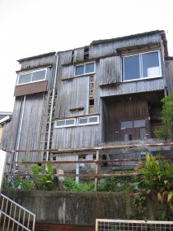

自宅のPC、Cathy復旧の続き。自動更新をしかけていたので、Windows Updateはほとんどおしまい。ぽちぽちとアプリケーションを導入・設定していく。これが意外と手間かかる。IntelliSyncを利用してPalmとLotus Notesの間でスケジュールをHotSyncしようとしたところ、うまくいかない。Notes 6.5.2を新規で導入したため、リリースが対応していないのかもしれない。IntelliSyncのバージョンを3.7Jから5.2Jに上げてみる。Vectorから、IntelliSyncダウンロード版(現在、取扱なし)をgetしてくる。んが、NG。おいおい、4,179円も払ったんだぞ。
Notes R5では当然、6.5.2にリリースアップしてもHotSyncできていた。そこで、一旦R5.0.13にリリースダウンしてみる。初回「メモリが足りません」なるエラーが出たものの、OK。2回目からは、エラー表示もない。R5.0.13から6.5.2 jaにリリースアップしても、OK。R5のモジュールが、なにか関係していたのかも。他にも途中Palm Desktopを入れ直していて、CLIEに付属していたものではないver4.0.1を使ったのだが、それが残ってしまった。ちなみに、Notes 6.5はIntelliSync 5.2Jでも正式対応されていなかった。それが原因だったのだろうか?
二転三転。フォントのサイズは縮小しない設定、つまり標準設定に戻す。戻した理由は、Talk Roomのtableタグ内で縮小されないことによる整合性の観点も大きいが、そもそも字が小さくて読めないサイトの方が「おかしい」のではないかと思ったから。どんなもんでしょう? あとtableタグ内(th, tr, td)の「align」と「valign」を、CSSで書き直し中。線路は続くよ～、どこまでも～って感じ。「HOLD Blog Site」の方は、設定変更ナシ。Operaって、font-size: smallが標準サイズになるの!? 言葉の解釈としては、絶対におかしいだろ。
先週土曜日、再び蛇崩川(じゃくずれがわ)を散歩。2回目だと勝手知ったるなんとやらで、ウロウロしない。今回は用賀ではなく桜新町で下車して、サザエさん通りをチラッとだけ見て北へ向かう。中央図書館までは、徒歩15分ぐらいか。いよいよ、緑道を中目黒に向かって出発。弦巻中学校、小泉公園を通って東へ進む。1時間半ほど歩いて世田谷区の外れ、目黒区の手前まで来る。すると休憩を予定していた喫茶店が、なんと6月から一時休業していることが判明。店頭の案内によると、かなり急な休業だった模様。いわゆる、訳ありってやつか?
やっていないものは仕方ないので、出発進行。目黒区に入るあたりは緑道自体の幅もあり、民家の植木鉢が置いてあったりベンチが整備されていて明るい雰囲気。都内にもこんなところがあるんだ～、という月並みな台詞がノドから出てきそうな感じ←んざそら。なにしろ、ハウルの動く城まである←違うだろ。「世田谷の川 探検隊 - 蛇崩川 目黒区編」(リンク切れ)によると、社宅の廃屋らしいが。どこの会社だろうね。
前回歩いたときは出発時間が遅かったため(15時すぎ)、中目黒に着いたときは17時ぐらいになってしまった。今回は13時に出発した上、目当ての喫茶店(ちなみに名前は、GARDEN Style)での休憩もなかったため、15時すぎには中目黒に到着してしまった。そこで東横線南側の細～い緑道を通って、中目黒ラピュート(とかいう名前らしい)でお茶にする。ここには、KALDIもある。目黒川との合流点は今回も見るの忘れてしまったが、また次回があれば……その前に、次は等々力渓谷だだだ!
ジョアン・ジルベルトのコンサートへ行く。場所は、昨年と同じく東京国際フォーラム。17:00開演予定が、なんと17:10にはじまってしまう。昨年と同じモードなら18:30に開演したっておかしくないというのに、一体どうしたというのだ!? 18:20まで歌って、いったんフリーズ。今回は係員が、拍手を止めに会場内をまわる。ずっと拍手をしているとフリーズが終わらないためだという。しばらくして再開。19:20に一旦終わって、アンコール。19:40に終了した。ちなみに、フリーズは拍手してくれている観客に対する敬意の表れとのこと。
その後ネットの情報をみていると、翌日10/11(Mon)の最終日はなんと4時間以上もの長丁場だった模様。即興曲もあったりして、相当よかったみたい。やはり最終日に行けばよかったのかもしれないが、チケットの確保とか色々とむずかしかったかも。あと、翌日10/12(Tue)は仕事に行かないといけないし……。もともと昨年が日本最初で最後の公演といわれていたが、今年も実現した。来年も、どうなることやら。もちろん、開催してくれた方がうれしいけどね。
スペインクラブ、月島店。10/10(Sun)のコンサートの帰り、昨年11月以来ひさしぶりに行ってビックリ。サービス・レベルが、ガクンと落ちた。あとから思えば、ポイント・カードがスタンプ・カードになってしまった時点でピンとくるべきだったのかも。うちは2階席が利用できるレベルまでいっていたのだが、その2階席のサービスが非常に残念な結果になってしまった。ウェイターの「彼」(単数形)は、とてもよくがんばっていたのだが、12人もの団体客の対応で手一杯で我々2人のところまで気がまわらないのだ。
これはウェイター個人の問題ではなく、店としての対応の問題である。1人1,000円もチャージをとるのであれば、それに見合ったサービスをして欲しい。また帰りがけに新しいポイントカードを受け取ったのか聞かれた際に、もういらないという旨回答した。普通そんな回答をされたら、あわててもよいのでは? ところがレジ係は、別になんとも思いません、という反応しかしない。一体、どうしてしまったのか? 以前からサービスが悪いのであればともかく、以前とサービス・レベルが違いすぎるのだ。これでは、二度と来る気になれない。とても残念。
F1日本GP、決勝。レースの中身よりも、熊倉さんの髪が白くなってしまっていたことに驚く。昨年から今宮さんも地上波で観ていないので、しばらくしたら熊倉さんのように白い髪で現れることになってしまうのだろうか。レース自体は、なんてゆーかもう「またですか」って感じ。クルサードとの接触がなければ、フェラーリのワンツー・フィニッシュもありえたでしょう。復帰直後の上海GPからのR.シューマッハの好調ぶりは、ちぃと腑に落ちないのだが、琢磨がプレッシャーにも負けずにキチンとした結果を出したことは評価したい(←エラそう)。
「作家の矢野徹さんが死去」(リンク切れ)とのこと。矢野 徹さんを、はじめて知ったのは多分17年前。BNNのWizardryのハンドブックを買ったときだったと思う。それともコンプティーク誌上だったか。多分前者のはずだが、BNNではなかったもかしれない。当時の自分から見れば「おじいさん」(しかも、SF作家!)が、パソコンでバリバリにゲームしている。その光景(?)が新鮮だった。コンプティークBBSにアクセスして、「矢野徹の狂乱酒場」を読みまくった。あまりにも書き込み数が多くて、読むだけでも精一杯だった。
狂乱酒場のボードには、何人かのプロ作家が出入りしていた。その中で「おぢさん」こと高千穂 遙氏がアクティブ・メンバーとして多数の書き込みを行ない、その後「おぢさん」は「茶房てくにか」を別途新設。こちらも読みまくって、電話代がとんでもないことになった。電話代だけが原因ではなかったが、やはりそれが大きな要因として、しばらくコンプティークBBSを離れた。ひさしぶりにアクセスすると狂乱酒場は散閑としており、茶房てくにかも距離感を感じるような雰囲気になってしまっていた。
それが、12年前の1992年頃だったと思う。新しいマシン(PC-9801FS2)を手に入れて、昔からのBBS(ONE)と新しいBBS(ZOB)へのアクセスが増え、コンプティークBBSへはアクセスしなくなった。ZOBの書き込み数は多く、さらに自分自身も書き込むようになったため、ネット活動の多くはZOBにシフトしていった。1994年頃は商用BBSがInternetによるmail Gatewayサービスを展開しはじめて、NIFTY-ServeやPC-VANとのメールのやりとりができるようになった。そのあとは、What's Oldの通り。
いつの間にか話がズレたけど、矢野 徹さんは私のパソコンとの関わりにおいて、大げさに書いてしまえば人生において、少なからず影響を与えた人だった。享年81歳ということで、もうそんな年に……と思うと同時に、自分の年齢も認識する。さらにこの前ダーティペアの小説を買ったら、巻末の「おぢさん」こと高千穂 遙氏の写真を見てビックリ。なんと、スキンヘッド! それでいてヒゲを生やしているものだから、一体なにごと!? と思った。昔のダンディな写真の次がいきなりあれなもんで、なんつーかその……ショックでした。
R25を読んで、またTHE BLUE HEARTSを聴きたくなった。R25に載っていたCDのリストは、以下の通り。自分は「TRAIN TRAIN」までしか聴いていない。彼らは「駆け抜けていった」というイメージの通りで、気がついたら取り残されていたかのようだった。当時の自分はノリノリ(死語)で聴くというスタイルではなく、歌詞にズシーンとしたものを感じながら頭を抱えて聴くような感じだった。あの頃に色々考えたからこそ、いまの自分がある。「いまどきの若者」は一体なにを聴いて、なにを考えるのだろうか。
| タイトル | 発売年 | 発売元 | 価格 |
|---|---|---|---|
| THE BLUE HEARTS | 1987 | トライエム | 3,066 |
| YOUNG AND PRETTY | 1987 | トライエム | 3,066 |
| TRAIN TRAIN | 1988 | トライエム | 3,066 |
| BUST WASTE HIP | 1990 | イーストウエスト・ジャパン | 2,957 |
| HIGH KICKS | 1991 | イーストウエスト・ジャパン | 2,957 |
| STICK OUT | 1993 | イーストウエスト・ジャパン | 2,957 |
| DUG OUT | 1993 | イーストウエスト・ジャパン | 2,957 |
| PAN | 1995 | イーストウエスト・ジャパン | 3,059 |
Google News。その昔ディープリンクは違法と司法判断が下された記憶があるのだが、それは気のせいかはたまた海外の話か。とわいっても、Google Newsは英語版がとっくの昔にサービスインされているのだががが。つまるところ、Google Newsが提供するのは記事に対するアンカーポイント、要は「リンクだけ」ってところがポイントなんだろうな。個人的には、何気にいい感じ。あちこちのサイトを巡回しなくてもすむ、ような気にさせてくれる。ぢつわ、こっちの方がポイントなのかもしれない。:-P
| STIC | : | もう、モスバーガーには行かない。 |
| ルディア | : | まーたはじまったよ、こいつは。 |
| アリステア | : | ま、まあまあ。お話は聞きましょうよ。 |
| ソフィア | : | で? |
| STIC | : | モスバーガーが、注文を受けてから作りはじめるのは知っている。以前、10分以上も待ったことがある。しかし20分以上も待たせるのは、どう考えてもおかしいのではないか? しかも、22時台にだぞ! |
| ルディア | : | 金曜の夜だったからじゃないの。あんたが行く店って、いっつも混んでるしぃ。 |
| STIC | : | あまりに遅いので、レジに文句を言いに行こうとしたら持って来た。「お待たせしました」と向こうがふつ～に言うので「待たせすぎだよ」と言ったら、これまたふつ～に「すいません」とだけ。あまりにアタマにきたので、二度と行きません。 |
| ソフィア | : | ホントに、もう行かないのぉ? |
| ルディア | : | しばらくしたら、また行くわよ。クレームつけるんだったら、持って来てからじゃ遅いと思うけど。持って来る前に言いに行って、帰りそぶりを見せなきゃダメよ。 |
| アリステア | : | ダ、ダメですよ。そのような、クレーマーの基本テクニックのようなことを言っては……。 |
| STIC | : | 無意識に、モスバーガーをファーストフードととらえてしまっているのかもしれない。しかし上記のように論理的には理解しているつもりだ。モスバーガーはそーゆーところなんだ、というのであれば別に異議を唱えるつもりはない。ただし、その場合はハッキリ言える。そんな場所には二度と行かん。しかし、本当にそうなのか? 10分も20分も待つのが、当然なのか?? |
| ソフィア | : | 長い。 |
| ルディア | : | たしかに匠アボガト山葵(わさび)って、いつも売り切れなのが悲しいわよねぇ。 |
| STIC | : | って、なに人のチキンバーガー食っとんぢゃあああっ! |
7月中旬に雲取山に行って以来、山に登っていない。今週末が実質シーズン最後とも考えられたので、奥多摩の本仁田山に行くことにした。7:00すぎに家を出発して新宿からホリデー快速おくたま3号に乗ったものの、鳩ノ巣には停車しないため御嶽で一旦降車。鳩ノ巣に着いたときには、10:00をすぎていた。10:20に出発して駅を出て右に向かい、奥多摩方面すぐの踏切を渡って道なりに北上する。正法院を右手に見て、民家に突き当たるところを左に曲がって山道に入る。ひさしぶりのハイキングなので、少しゆっくり登る。コースタイム50分のところを55分かかって、大根ノ山ノ神に到着。
ここから本仁田山に向かう道と川苔山に向かう道が分かれるのだが、前者がわからない。分岐がもっと先にあるのかと思って進むが、やはりそのまま進むと川苔山に向かってしまう状態。道が間違っていることはわかったが、正しい道がどこにあるのかわからないのだ。お嫁さんと空がぐずりはじめるが、トータル所要時間を計算して川苔山に向かうことにする。この「トータル所要時間」ってやつに、ロスタイムが含まれていなかったことがあとでヤバイことになる。大根ノ山ノ神から2時間半強かかるところを、ペースをあげて2時間20分で川苔山頂上直前の茶屋に到着。
茶屋といっても営業はしておらず、大学のワンゲルとおぼしきグループが雨宿り兼食事をとっていた。とりあへず腹が減ってしょーがないので、食事にする。レトルトカレーを持って来たのだが、もう温める気力もない。ご飯は冷たいが、コーヒーと焼鳥缶で身体を暖める。まわりがガスっていたことと時間的な問題から頂上はあきらめて、川乗橋へ向かって下山開始。この時点で14:40。コースタイム通り、1時間20分で百尋の滝に着く。とてもキレイな滝で、しばし興奮。この興奮がいけなかったのか、それとも……。
石を伝って、対岸に渡る。しかし対岸はヒドイ崖崩れで、上の林道に登る道が見当たらない。地図を見ると、上の林道に登るのではなく沢沿いに下る模様。また石を伝って川を渡る。これが結構、あぶなっかしい。よくよく考えてみれば、こんな危ないルートのわけないんだが……。沢沿いに下るはずなので、下り始める。いきなり進めなくなる。また石を伝って対岸渡る。崖崩れで進めない……おかしい。今度は、ガイドブックを見る。すると、滝を見るには登山コースから外れる旨記述してある。地図上では一本道なのだが、つまりわき道という意味だ。
滝に下りてきたハシゴを登る。すると、あるではないか! 川乗橋に向かう別の道が!! 下ってきた方向から見えない位置には、案内板が。あのなあ……。この時点で16:20。20分間ロスしたことになる。ここから木の橋を何度も渡り、沢沿いに下り始める。どんどん暗くなってきて、ペースが落ち始める。懐中電灯を点けてすぐ、17:00に細倉橋にようやく到着。アスファルトの道に戻って来れば、あとはなんとかなる。でも林道には街灯なんてものはなくて、ますます暗くなっていく。カサをさすとスピードが遅くなるので、雨の中をレインコートのまま懐中電灯を片手にガンガン歩く。
川乗橋のバス停まで、コースタイム45分のところを30分で歩く。すると、目の前をバスが通りすぎていく! 時計を見ると17:35、バスの時間は17:33、次のバスは18:38。やれやれ。待つこと自体が苦痛だったので、歩き始める。1時間後、奥多摩駅に到着。いまから考えると、やはり道を間違えていたことに気づいた時点で戻るべきだったんでしょうな。でも、1時間半しか歩いていない状態なのに帰宅って精神的にはツライだろ。ちなみに万歩計の数値は、なんと44,800歩。「しっかり歩数」なるものも記録できて、330分(5時間30分)で33,000歩。歩行距離は、22.4kmだった。